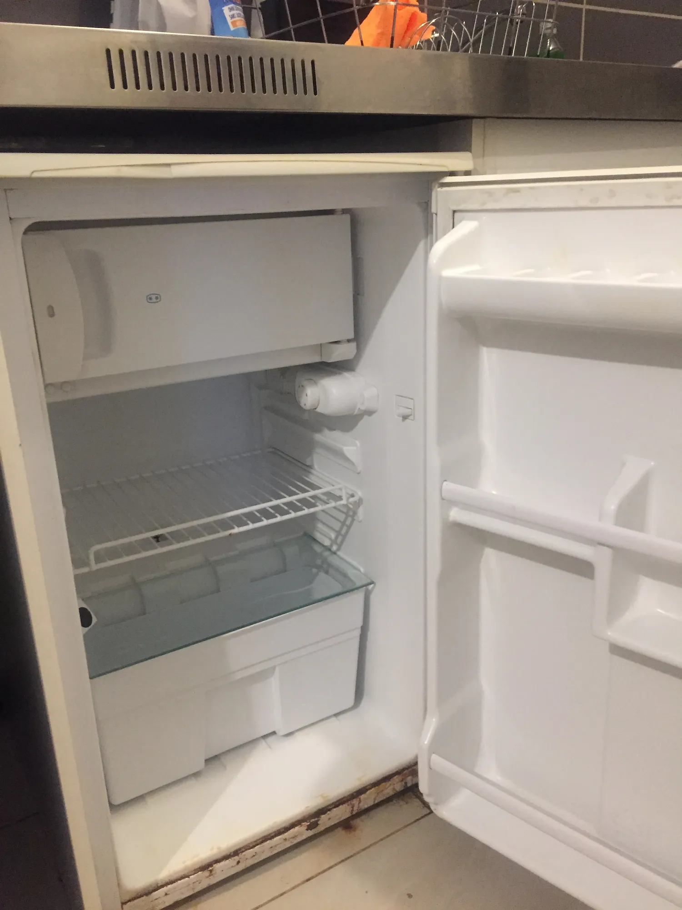

35 Bis Rue Georges Merckle
Studio 24m² 44.000€
Localisation:
Lien google Map
Chemin d'accès, pas en très bonne état:

Avant de l'immeuble:
Arrière de l'immeuble:
L'appartement correspond aux deux fenêtres en bas à gauche.
Vue depuis l'arrière de l'immeuble:
L'entrée:
Plan de l'appartement
Coin Cuisine: (le grand frigo ne reste pas)
Les portes des rangements ne se fermes pas bien, mais ça devrait pouvoir se fixer avec un coup de tournevis
Pièce principal:
tableau et compteur dans la partie droite de l'armoire:
La poigné du volet bloque l'ouverture compléte de la fenêtre, elle s'ouvre à ~90degré:
Quelque dégât au niveau d'un mur:
Salle de bain:
Local Technique:
Ballon d'eau chaude:
arrivée de la fibre dans l'immeuble: